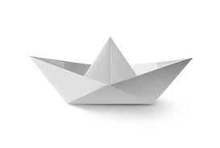
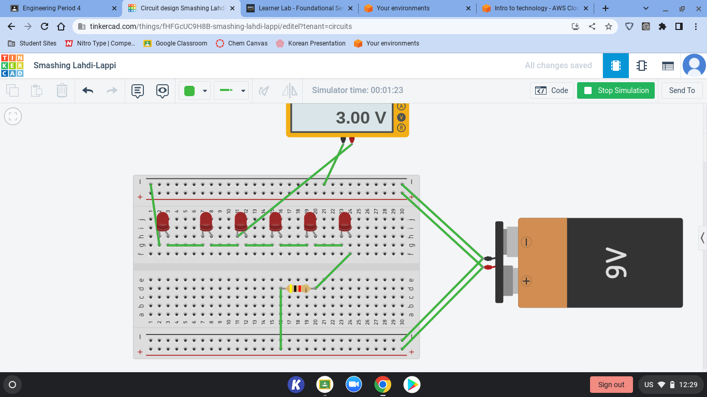

8/19/2022
Today I carried Jason in league and became a yuumi main.:)
I have found out Top Jax is the easiest role.
8/22/22
Today I had all 7 of my classes and volleyball tryouts.
8/23/22
Today I tried out for boy's volleyball and played some league of legends.
8/24/22
Today I played some yuumi games and went to the last volleyball tryouts.
8/25/22
Today I got the volleyball tryout results and got onto the team.
8/26/22
Today I was lost during 7th period not knowing what to do.
8/30/22
Today I had my first volleyball practice with the CV team and it was super fun.
8/31/22
Today I first went to school then went back to CV to practice volleyball with my friends who are also on the team. I also learned how to use TinkerCad to 3D design some things. It is a basic but useful website.
9/1/22
I went to volleyball practice and it went great, but ultimately felt kinda short. When I play volleyball I feel like time flies right past me.
9/2/22
Today I went to volleyball practice and right after went to basketball practice. I am super excited for this weekend because I am going on a little vacation.
9/7/22
Last weekend for labor day weekend my family and I went to newport for a little staycation with some family friends.
9/12/22
Last week I had a great week at school with nothing going wrong except going down with a cold last weekend. It was super boring except being able to watch the NFL games. GO COMMANDERS!!
Week 1
I got to go visit my classes and get to know my teachers more. I wasn't in this class yet because my schedule wasn't switch up to this point yet.
Week 2
Still wasn't in this class, but in my other intro to engineering class I was able to learn about setting up my website and also got to put it online from github.
Week 3
I have officially joined this class and we did our first challenge day. It was with half pipes and with much teamwork. Teamwork was needed to have the marble ride through the pipes and eventually reach the end of the track. I believe that the team I was on was the first team to have the marble reach the end and into the bucket/container. Mainly was just fixing our website throughout the week. It was a small week because of labor day, back to school night, and minimum day on friday. This week I learned how to keep on updating my website and be able to keep on updating this website to turn in for future points.
Week 4

We have started measuring and cutting out the cardboard for the Rude Goldburg challenge and we are a little behind, but the next day all we need to do is glue everything then we are done with the project. We have just cut out all of the parts needed for the project. I have learned to participate during these projects and learned to be supportive with my project team. We have decent chemistry and teamwork with some people doing less work than others but it is fine because those people chose to do more of the work. I beileve that we will be able to finish the project and get a decent score on it. We had some mistakes on measurements and cutting but we were able to fix these mistakes and push foward. On Friday, we had a challenge day and had to make paper boats float with a certain amount of weight. My team and I didn't get first, but didn't get last because some teams had their paper boats sink in the first couple seconds.
 Week 5
This week we finished up the Rube Goldburg project. My team's design was more on the fancier design and it was hard to make it work because of the complications. Thus, leading to miscommunications and failures. We eventuallly succeeded and I felt like we did well for our project. This was a great project for us to learn how to work together and solve problems throughout the project. This is a great project for teenagers to do to learn special skills necessity for life. I learned how to work as a team, communicate well with my team, learn problem solving skills such as trying out new ways to make it work, and other skills. Another activity we did was visit the other Rube Goldberg projects in the other classrooms. This gave us an idea on what else was possible with others showing new ideas we never thought of such as using marbles. They used a marble roller coaster to start their project and ended in the same result. I wish I could have gone back and thought of different deisgns that could be better in efficency.
Week 5
This week we finished up the Rube Goldburg project. My team's design was more on the fancier design and it was hard to make it work because of the complications. Thus, leading to miscommunications and failures. We eventuallly succeeded and I felt like we did well for our project. This was a great project for us to learn how to work together and solve problems throughout the project. This is a great project for teenagers to do to learn special skills necessity for life. I learned how to work as a team, communicate well with my team, learn problem solving skills such as trying out new ways to make it work, and other skills. Another activity we did was visit the other Rube Goldberg projects in the other classrooms. This gave us an idea on what else was possible with others showing new ideas we never thought of such as using marbles. They used a marble roller coaster to start their project and ended in the same result. I wish I could have gone back and thought of different deisgns that could be better in efficency.
Week 6
This week we are starting Computer Engineering. We are going to first start off with taking apart and putting back together a dead computer. I am excited for this because I am looking forward to learning about this topic and I want to change my graphics card in my computer. This can help me with changing my graphics card from a gtx 1660 to a 2060 super. It took about 1-2 days to unassemble and reassemble the chromebook. This chromebook was a older model and had some old parts including some broken parts. The chromebook my partner and I had were missing some screws and parts but overall was a great experience. I was able to learn all about computer engineering and how to unassamble a computer.
Week 7
 This week we are doing bioengineering. Our first assignment is to create some type of prostetic limb for a animal. I chose a penguin's leg and foot. I learned all the complications and requirements for a penguins leg and foot. This leg and foot contain webbed feet and they are made up of plastic. On friday we were building pb and j sandwiches using exact instructions made by students. This was difficult for the builders because the instructions were to vague. Overall it was a great lesson from the teacher and it helps us to make better instructions for the future. The peanut and butter jelly sandwiches were poorly built due to the instructions. The instructions didn't specify to open the jars. Lastly, we had to research some engineering jobs and the paying per job. Most entry level engineering pay either hourly or 60-90k per year which is decent for entry level. I would like to pursue either analytical analysis or venture capitolist. Most engineering jobs are great and will make up some pool of jobs for new young people, but I feel like this isn't the field for me. The only engineering I would have in my pool of jobs would include either mechanical or computer engineer.
This week we are doing bioengineering. Our first assignment is to create some type of prostetic limb for a animal. I chose a penguin's leg and foot. I learned all the complications and requirements for a penguins leg and foot. This leg and foot contain webbed feet and they are made up of plastic. On friday we were building pb and j sandwiches using exact instructions made by students. This was difficult for the builders because the instructions were to vague. Overall it was a great lesson from the teacher and it helps us to make better instructions for the future. The peanut and butter jelly sandwiches were poorly built due to the instructions. The instructions didn't specify to open the jars. Lastly, we had to research some engineering jobs and the paying per job. Most entry level engineering pay either hourly or 60-90k per year which is decent for entry level. I would like to pursue either analytical analysis or venture capitolist. Most engineering jobs are great and will make up some pool of jobs for new young people, but I feel like this isn't the field for me. The only engineering I would have in my pool of jobs would include either mechanical or computer engineer.
Week 8
 This week we started aeroengineering. Aeroengineering includes engineering for rockets, airplanes, etc. Almost anything that goes into the atmosphere needs aeroengineering. Aeroengineering is a great job which I personally know someone in this field. He engineered a component on one of the NASA mars rovers that collected the sand/dirt. For the challenge day, we had to make paper fly from the second floor balcony into a bucket/trash can. No one made it in, but people were close to make these paper into the buckets. I was not close, but I felt like if I had some trials and more time to design I would be able to do something to make it closer to the trash can. I would have made the folds more crispy and less messy. Also I would have youtubed something to make a professional paper airplanes used in airplane competitions. I would not pursue a aerospace engineering job because it is not my favorite field of engineering. The only job I would really pursue for any job at NASA would be an analytical job to the satellites. Maybe analyze them to see if I could make anything better or just collect and analyze the data.
This week we started aeroengineering. Aeroengineering includes engineering for rockets, airplanes, etc. Almost anything that goes into the atmosphere needs aeroengineering. Aeroengineering is a great job which I personally know someone in this field. He engineered a component on one of the NASA mars rovers that collected the sand/dirt. For the challenge day, we had to make paper fly from the second floor balcony into a bucket/trash can. No one made it in, but people were close to make these paper into the buckets. I was not close, but I felt like if I had some trials and more time to design I would be able to do something to make it closer to the trash can. I would have made the folds more crispy and less messy. Also I would have youtubed something to make a professional paper airplanes used in airplane competitions. I would not pursue a aerospace engineering job because it is not my favorite field of engineering. The only job I would really pursue for any job at NASA would be an analytical job to the satellites. Maybe analyze them to see if I could make anything better or just collect and analyze the data.
Week 9
 This week we are still doing aeroengineering. We are making bottle rockets to launch up into the air and the goal is longest distance. So its about how far you go not how high you go. My team and I wen for a simple design with 4 fins and a cone nose. We believe that simpler is better. Thus, because of this philosphy we had a simple design. This design I believe will go far. We will be launching our rockets on Friday. Our rockets were launched into the air. We were able to choose how much water was in the bottle and we let it fly. My group's rocket did not go particularly far and we were basically unsuccessful. We have learned that we were unsuccessful because of the rough measurements and not everything was precise. Overall it was a great experience because it was my first time doing something like this and to be able to experience this was a great.
This week we are still doing aeroengineering. We are making bottle rockets to launch up into the air and the goal is longest distance. So its about how far you go not how high you go. My team and I wen for a simple design with 4 fins and a cone nose. We believe that simpler is better. Thus, because of this philosphy we had a simple design. This design I believe will go far. We will be launching our rockets on Friday. Our rockets were launched into the air. We were able to choose how much water was in the bottle and we let it fly. My group's rocket did not go particularly far and we were basically unsuccessful. We have learned that we were unsuccessful because of the rough measurements and not everything was precise. Overall it was a great experience because it was my first time doing something like this and to be able to experience this was a great.
Week 10

This week we are focusing on electrical engineering. We are learning about electrical engineering and the laws about it including the philosiphies. Electrical engineering is using watts, volts, current, resistance. Coding goes hand and hand with electrical engineering. On Thursday and Friday, we worked on breadboards and what parallel vs series are. I was able to understand what we were doing and I am excited to work with breadboards in real life. This is something I am considering, but throughout the weeks I have found two jobs that I may pursue. Data analytics for google and some jobs in the financial field. I still think that I may fit into the engineering pathway but I am only a freshman who still doesn't know what to do. I would rate breadboards and electrical engineering a 9/10.
Week 11
We are doing electrical engineering still. This week we will be focusing on series and parallel boards. Also, including Ohms law with all of the calculations and formulas needed to calculate certain things. We were able to tinkercad a breadboard making led lights light up from the flow of electricity. I had a tough time learning how to do the parallel series and what way the resistors go. On challenge day, we took a guess on how many candycorn could fit onto a single piece of paper without stacking onto each other. My group was the third closes with a guess of 226. The correct answer was 243 or something close to that. The environmental engineering was a great topic that I enjoyed also including electrical engineering. I found electrical engineering and computer engineering the most impactful on my career path choosing so far.
Week 12
 This week we focused solely on electrical engineering and the breadboards. We were able to make both types of breadboards, parallel and series. This was a great thing for me because this was one of the topics that I would like to have explored as a career path option. So far I have learned that electrical engineering is hard careert to go into for me personally as I found it hard to learn and understand some of the topics. I still do think electrical engineering could be career path designation for me. On challenge day we were asked a would you rather question and had to time to update our websites. The would you rather question was, "Would you rather, sit in a math class the whole year everyday 50 minutes, or count to 1 million". I personally chose sit in the math class because according to my calculations, it would take less time out of my life and I also could learn math and be able to get ahead in the math curriculum. It would take 150 hours to sit in the math class while for me it would take 277 hours to count to 1 million. I would rather sit in the math class.
This week we focused solely on electrical engineering and the breadboards. We were able to make both types of breadboards, parallel and series. This was a great thing for me because this was one of the topics that I would like to have explored as a career path option. So far I have learned that electrical engineering is hard careert to go into for me personally as I found it hard to learn and understand some of the topics. I still do think electrical engineering could be career path designation for me. On challenge day we were asked a would you rather question and had to time to update our websites. The would you rather question was, "Would you rather, sit in a math class the whole year everyday 50 minutes, or count to 1 million". I personally chose sit in the math class because according to my calculations, it would take less time out of my life and I also could learn math and be able to get ahead in the math curriculum. It would take 150 hours to sit in the math class while for me it would take 277 hours to count to 1 million. I would rather sit in the math class.